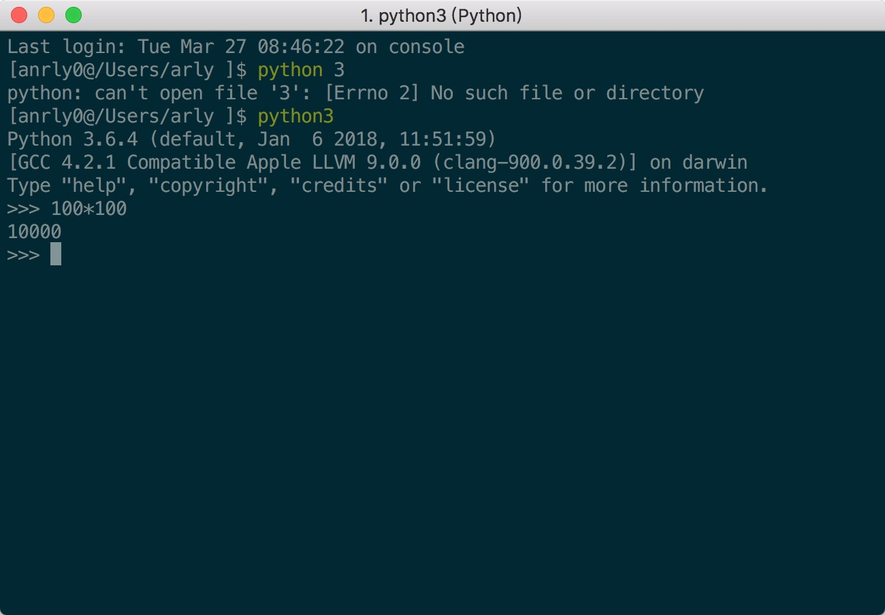
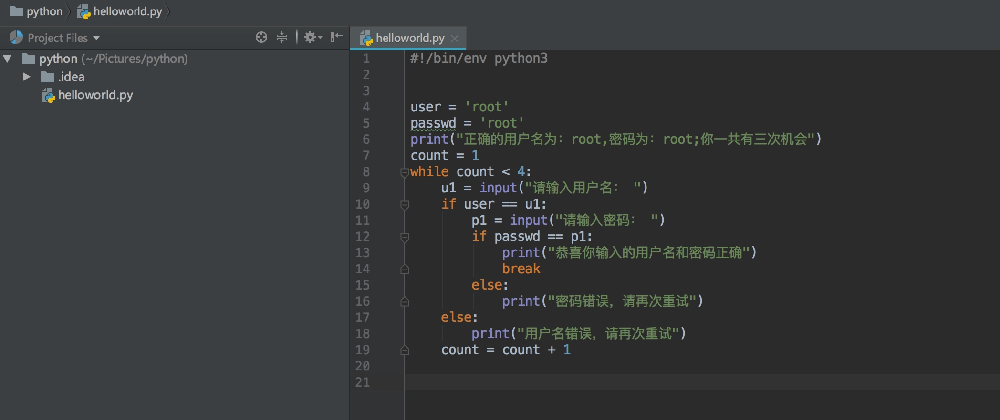
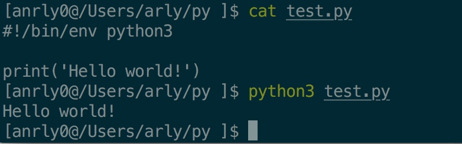
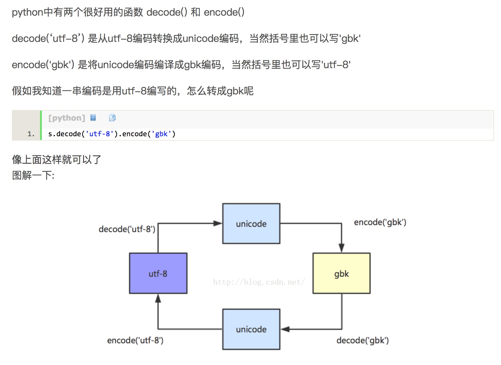
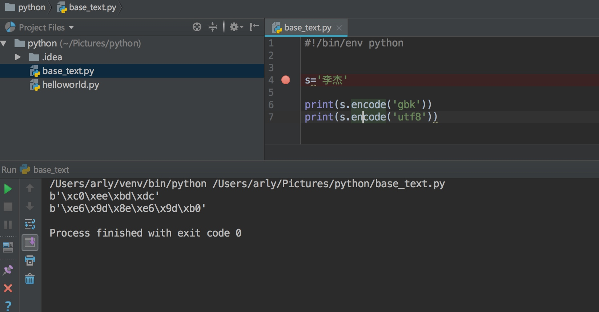

1、REPL
所谓REPL即read、eva、print、loop（读取、计算、打印、循环）

2、运行脚本
REPL方式的优点是简单明了，但是它在面对很多大型项目时存在很多的不足。我们可以通过运行脚本的方式来解决这一问题


位（bit）：“比特”，表示二进制位。位是计算机内部数据储存的最小单位
字节（byte） ：“拜特”，习惯上用大写的“B”表示。字节是计算机中数据处理的基本单位。
1个字节等于8个比特：1Byte=8bit
ascii 是最早美国用的标准信息交换码，把所有的字母的大小写，各种符号用 二进制来表示，共有256中，加入些拉丁文等字符，1bytes代表一个字符，
Unicode是为了统一世界各国语言的不用，统一用2个bytes代表一个字符，可以表达2**16=65556个，称为万国语言，特点：速度快，但浪费空间，可以用在内存处理中，兼容了utf-8，gbk，ASCII，
utf-8 为了改变Unicode的这种缺点，规定1个英文字符用1个字节表示，1个中文字符用3个字节表示，特点；节省空间，速度慢，用在硬盘数据传输，网络数据传输，相比硬盘和网络速度，体现不出来的，
gbk 是中文的字符编码，用2个字节代表一个字符，


单行注释符号(#)
井号(#)常被用作单行注释符号，在代码中使用#时，它右边的任何数据都会被忽略，当做是注释。
批量、多行注释符号（''' ''', """ """）
在python中也会有注释有很多行的时候，这种情况下就需要批量多行注释符了。多行注释是用三引号(单，双)
1、变量名可以包括字母、数字、下划线，但是数字不能做为开头。例如：name1是合法变量名，而1name就不可以。
2、关键字（保留字）不能做变量名使用，函数不允许做变量名。
3、除了下划线之外，其它符号不能做为变量名使用
4、Python的变量名是除分大小写的，例如：name和Name就是两个变量名，而非相同变量哦。
a = "alex"
b = a.capitalize() print(a)
print(b)
a. 移除 name 变量对应的值两边的空格，并输入移除后的内容 b. 判断 name 变量对应的值是否以 "al" 开头，并输出结果
c. 判断 name 变量对应的值是否以 "X" 结尾，并输出结果
d. 将 name 变量对应的值中的 “l” 替换为 “p”，并输出结果 e. 将 name 变量对应的值根据 “l” 分割，并输出结果。
f. 请问，上一题 e 分割之后得到值是什么类型(可选)? g. 将 name 变量对应的值变大写，并输出结果
h. 将 name 变量对应的值变小写，并输出结果
i. 请输出 name 变量对应的值的第 2 个字符?
j. 请输出 name 变量对应的值的前 3 个字符?
k. 请输出 name 变量对应的值的后 2 个字符?
l. 请输出 name 变量对应的值中 “e” 所在索引位置?
m. 获取子序列，仅不包含最后一个字符。如: oldboy 则获取 oldbo; root 则获取 roo
a. 利用下划线将列表的每一个元素拼接成字符串，li = "alexericrain"
b. 利用下划线将列表的每一个元素拼接成字符串，li = 'alex', 'eric', 'rain'
content = input('请输入内容:') # 如: 5+9 或 5+ 9 或 5 + 9
content = input('请输入内容:') # 如:asduiaf878123jkjsfd-213928
如:敬爱可亲的 xxx，最喜欢在 xxx 地方干 xxx
循环提示用户输入:用户名、密码、邮箱 (要求用户输入的长度不超过 20 个字符，如果超过则只有前 20 个字符有效) 如果用户输入 q 或 Q 表示不再继续输入，将用户输入的内容以表格形式大隐
#!/bin/env python3
num = 1
while num < 11:
if num == 7:
pass
else:
print(num)
num = num +1
#!/bin/env python3
n1 = 1
num = 0
while n1 < 101:
num = num + n1
n1 = n1 +1
print(num)
#!/bin/env python3
n1 = 1
while n1 < 101:
if n1 % 2 == 0:
pass
else:
print(n1)
n1 = n1 + 1
#!/bin/env python3
n1 = 1
while n1 < 101:
if n1 % 2 == 0:
print(n1)
else:
pass
n1 = n1 + 1
#!/bin/env python3
n1 = 1
num = 0
while n1 < 100:
temp = n1 % 2
if temp == 0:
num = num - n1
else:
num = num + n1
n1 = n1 + 1
print(num)
#!/bin/env python3
user = 'root'
passwd = 'root'
print("正确的用户名为：root,密码为：root;你一共有三次机会")
count = 1
while count < 4:
u1 = input("请输入用户名： ")
if user == u1:
p1 = input("请输入密码： ")
if passwd == p1:
print("恭喜你输入的用户名和密码正确")
break
else:
print("密码错误，请再次重试")
else:
print("用户名错误，请再次重试")
count = count + 1